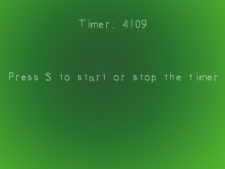
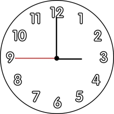
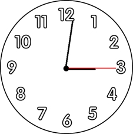

Timing

Last Updated 3/24/14
You've already learned about stuff that's event driven, now it's time to do things that are time driven. Knowing how to deal with time is key in making games. In this lesson we'll make a simple timer that can start and stop.A Timing tutorial with SDL 2 is now available.
Now say if you needed to time 30 seconds of something but you didn't have a stop watch.
If there was a clock on the wall with a second hand, you'd wait until it reached a multiple of 15:
and then you'd wait until it was 30 seconds away from the starting point.
This timer functions on the same principle. SDL has a timer running in your program and you can get its time in milliseconds using SDL_GetTicks(). If you need to time something for 1000 milliseconds, you'd store the time you started waiting and wait until the difference between the time you started and the current time to be 1000.

and then you'd wait until it was 30 seconds away from the starting point.

This timer functions on the same principle. SDL has a timer running in your program and you can get its time in milliseconds using SDL_GetTicks(). If you need to time something for 1000 milliseconds, you'd store the time you started waiting and wait until the difference between the time you started and the current time to be 1000.
//The headers
#include "SDL/SDL.h"
#include "SDL/SDL_image.h"
#include "SDL/SDL_ttf.h"
#include <string>
#include <sstream>
Along with the usual headers we include the string stream header.
I'll explain what a string stream does later.
int main( int argc, char* args[] )
{
//Quit flag
bool quit = false;
//The timer starting time
Uint32 start = 0;
//The timer start/stop flag
bool running = true;
At the top of our main function we have the two variables we're going to use to make our timer.
There's "start" which holds the time our timer started and "running" flag which keeps track of whether our timer is running.
//Start the timer
start = SDL_GetTicks();
//While the user hasn't quit
while( quit == false )
{
After we initialized and loaded the surfaces it's time to start the timer.
We start our timer by getting the current time by using SDL_GetTicks(). Then we enter our main loop.
We start our timer by getting the current time by using SDL_GetTicks(). Then we enter our main loop.
//While there's an event to handle
while( SDL_PollEvent( &event ) )
{
//If a key was pressed
if( event.type == SDL_KEYDOWN )
{
//If s was pressed
if( event.key.keysym.sym == SDLK_s )
{
//If the timer is running
if( running == true )
{
//Stop the timer
running = false;
start = 0;
}
else
{
//Start the timer
running = true;
start = SDL_GetTicks();
}
}
}
Here we handle when the 's' key is pressed which starts and stops the timer.
If the timer is running, we set the "running" flag to false, and set start to 0 just because I don't like stray values. If the timer is stopped, we set the flag to true and start the timer just like we did when we entered the main loop.
If the timer is running, we set the "running" flag to false, and set start to 0 just because I don't like stray values. If the timer is stopped, we set the flag to true and start the timer just like we did when we entered the main loop.
//If the timer is running
if( running == true )
{
//The timer's time as a string
std::stringstream time;
//Convert the timer's time to a string
time << "Timer: " << SDL_GetTicks() - start;
After we apply the background and the message surface we check if the timer is running.
If it is, we show the timer's time.
The formula to calculate the timer's time is:
So here we put "Timer: " + the timer's time in the string stream.
We make a string stream object named "time" which will hold the message containing the timer's time. String stream objects allow you make strings out of multiple variables. As you can see it functions a lot like cout, but instead of taking everything and dumping the text to the console it just stores the text in the string stream so we can use it.
For those of you who are still using VC++ 6.0 you'll need to cast (SDL_GetTicks() - start) to an integer.
The formula to calculate the timer's time is:
time = current time - start time.
So if you started the timer when SDL_GetTicks() was 10,000 and now SDL_GetTicks() is 20,000, it will return 10,000 meaning 10 seconds have passed since the timer started.So here we put "Timer: " + the timer's time in the string stream.
We make a string stream object named "time" which will hold the message containing the timer's time. String stream objects allow you make strings out of multiple variables. As you can see it functions a lot like cout, but instead of taking everything and dumping the text to the console it just stores the text in the string stream so we can use it.
For those of you who are still using VC++ 6.0 you'll need to cast (SDL_GetTicks() - start) to an integer.
//Render the time surface
seconds = TTF_RenderText_Solid( font, time.str().c_str(), textColor );
//Apply the time surface
apply_surface( ( SCREEN_WIDTH - seconds->w ) / 2, 50, seconds, screen );
//Free the time surface
SDL_FreeSurface( seconds );
}
//Update the screen
if( SDL_Flip( screen ) == -1 )
{
return 1;
}
}
Then we render the text surface that shows the timer's time using the text inside the string stream.
Then we apply the timer's time on the screen and free the surface.
After that the screen is updated and we continue the main loop.
After that the screen is updated and we continue the main loop.